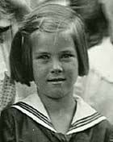
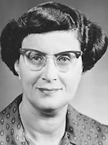
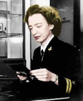

Early Days
Grace Brewster Murray was born on December 9, 1906 in New York City, USA. Hopper was her married surname.
Her father was Walter Fletcher Murray, an insurance executive; and her mother was the mathematically talented Mary Campbell Van Horne. The couple had three children; Grace Brewster Murray, Dr. Roger Franklin Murray, and Mary Murray. Grace was the eldest.
 Grace grew up in an academic atmosphere – her parents made sure she had access to all the books she wanted, and they did everything they possibly could to support her curious nature. Grace’s father raised his daughters and his son to value education, self-reliance, and hard work; and he urged them to always pursue their dreams.
Grace was educated privately at two conservative Presbyterian girls’ schools in New York: The Graham School and Miss Mary Schoonmaker’s School. At age 17, Grace had already decided to major in mathematics. Her professors noticed she was unusually skilled at explaining difficult concepts in math and physics to other students.
Higher Education and Marrige
 1928, at age 21, Grace graduated from a Vassar College, with a Bachelor of Arts degree in mathematics and physics. Two years later she received a master’s degree in mathematics from Yale. This was, also, the year she married Vincent Hopper, whom she divorced in in 1945. She did not marry again, but chose to keep the surname.
Grace accepted work as a mathematics assistant at Vassar College in 1931. While teaching, she went on to earn her PHD in 1934. She continued working at Vassar, where she was eventually promoted to associate professor.
The Navy and Beyond
 Following Japan’s attack on Pearl Harbor in November 1941, Grace attempted to join the military, but she was repeatedly denied. In 1943, however, her relentlessness paid off, and she was accepted into the Naval Reserve. This was the beginning of the 43 years she spent paving the way for computing as we know it today. In 1986, she retired as a rear admiral. She was the oldest serving officer in service. She never fully retired from computing, though. She worked as an industry consultant to the end of her life.
Grace died in her sleep, age 85, of natural causes, on January 1, 1992 in Berkeley, California.